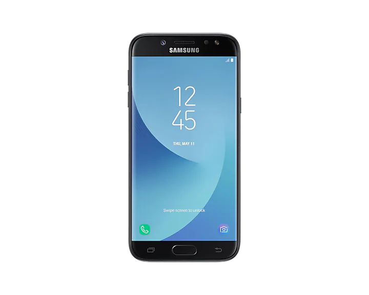

Laptopok szerelése
Ezen a részen szerezhetsz egy kis ismeretet a laptopok szerelési folyamatáról. Olyanokról minthogy milyen eszközökkel állunk neki szerelni, vagy hogy mi a szerelés menete, és még sok más érdekes információt is megtudhatsz. Ezen a linken keresztül oda is tudsz menni:Linkgyűjteményem a laptopokról
Telefonok szerelése
Ezen a részen szerezhetsz egy kis ismeretet a telefonok szerelési folyamatáról. Azokról a dolgokról tudsz információkat kapni hogy mi a szerelés menete, vagy hogy milyen eszközöket érdemes használni mikor egy telefont szétszedünk, vagy csak képernyőt cserélünk, vagy bármit csinálunk az eszközzel. Ezen a linken keresztül meg is lesheted:Linkgyűjteményem a telefonokról
Bluetooth- technológia

Ezen a részen szerezhetsz egy kis információt napjaink leghasználtabb és a vezetéknélküli adatátvitel egyik legjobb kivitelezéséről, a Bluetooth-ról. Ha felkeltette az érdeklődésed, ezen a linken kersztül tájékozódhatsz nyugodtan:A bluetooth technológiáról